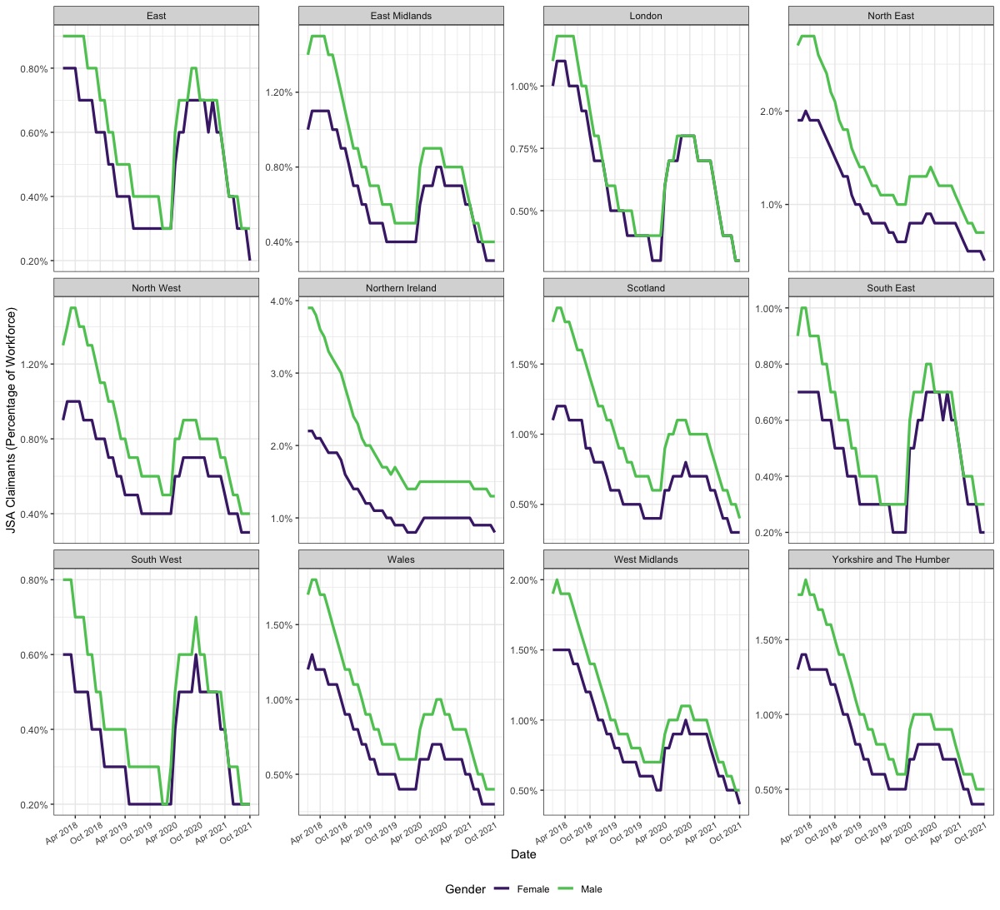

Introduction to the Nomis API
nomisr is for accessing Nomis data with R. The Nomis API is free to access without registration, and contains up-to-date official statistics, including data from the Census, the Labour Force Survey, DWP benefit statistics and other economic and demographic data. Nomis is maintained on behalf of the Office for National Statistics by the University of Durham.
There is a lot of data available through Nomis, and there are some limits to the amount of data that can be retrieved within a certain period of time, although those are not published. For more details, see the full API documentation from Nomis.
Nomis data is based around administrative and statistical geographies, and a particular geography should be specified when downloading data.
nomisr is designed around a pipeline of three key functions: nomis_data_info(), nomis_get_metadata() and nomis_get_data(). The nomis_overview(), nomis_content_type() and nomis_search() functions can assist with this.
Querying data availability
The nomis_data_info() function is focused on the structure and coverage of the available datasets.
Use the nomis_data_info() function without any parameters to get a tibble with metadata for all available datasets:
x <- nomis_data_info()
head(x)nomis_data_info() can also be used to query metadata from a specific dataset, using its ID. The example below uses the “LC4408EW - Tenure by number of persons per bedroom in household by household type” dataset from the 2011 census, which has the ID “NM_893_1”.
library(nomisr)
y <- nomis_data_info("NM_893_1")
tibble::glimpse(y)## Rows: 1
## Columns: 12
## $ agencyid <chr> "NOMIS"
## $ id <chr> "NM_893_1"
## $ uri <chr> "Nm-893d1"
## $ version <dbl> 1
## $ annotations.annotation <list> [<data.frame[14 x 2]>]
## $ components.attribute <list> [<data.frame[7 x 4]>]
## $ components.dimension <list> [<data.frame[6 x 3]>]
## $ components.primarymeasure.conceptref <chr> "OBS_VALUE"
## $ components.timedimension.codelist <chr> "CL_893_1_TIME"
## $ components.timedimension.conceptref <chr> "TIME"
## $ name.value <chr> "LC4408EW - Tenure by number of p…
## $ name.lang <chr> "en"When a tibble with metadata for all datasets or a specific dataset is returned, three of the columns, annotations.annotation, components.attribute and components.dimension, are list-columns of data frames. annotations.annotation contains metadata on the dataset, including units and current status. components.attribute contains more detailed status metadata. components.dimension contains the grouping and summary variables available in the dataset, which vary between different datasets.
The example below shows how to access data stored in list columns returned from the Nomis API. In the case of requests for metadata from a single dataset, the three columns are all lists with a length of 1. If requesting all dataset information with nomis_data_info(), each row is a list of length 1. Each list contains a data.frame, of varrying dimensions depending on the column and dataset. You can unnest individual list-columns to display their data in the same row as data from the rest of the tibble. Due to the differing lengths of the list-columns returned by nomis_data_info(), only one list-column can be unnested at a time.
library(dplyr, warn.conflicts = F)
y$annotations.annotation %>% class()
y$annotations.annotation %>% length()
y$annotations.annotation[[1]] %>% class()
y %>% pull(annotations.annotation) %>% class()
y %>% pull(annotations.annotation) %>% .[[1]] %>% class()
y %>% pull(annotations.annotation) %>% purrr::pluck() %>% class()
## Unnesting list columns
y %>% tidyr::unnest(annotations.annotation) %>% glimpse()Searching for data
nomisr also contains the nomis_search() function to search for datasets on particular topics. nomis_search() can be used to search in one or more of dataset names, descriptions, keywords, content type and units. If using multiple parameters, nomis_search() will return information on all datasets that match one or more parameters. Character vectors of strings can be used in searches, and likewise nomis_search() will return information on datasets that match one or more queries. The * is used as a wildcard symbol. nomis_search() returns metadata in the same format as nomis_data_info(), including using list-columns. The nomis_content_type() function can assist in identifying content type IDs for nomis_search().
Other ways to access metadata
nomis_overview() returns a tibble with a generalised overview of a given dataset.
q <- nomis_overview("NM_1650_1")
q %>% tidyr::unnest(name) %>% glimpse()nomis_overview() has a select parameter that can be used to select only particular elements of the overview to return.
Querying data variables
Vast amounts of data are available through Nomis and so to avoid overwhelming the API, it is good practice to query what concepts are available, using nomis_get_metadata(). While the other metadata functions can return concept metadata, nomis_get_metadata() provides greater flexibility and specificity over the returned metadata than nomis_overview() and nomis_data_info().
The example below queries some of the metadata available through the API for the “LC4408EW - Tenure bynumber of persons per bedroom in household by household type” dataset.
Getting concepts
If provided with just a dataset ID, nomis_get_metadata() will return the concepts available for the given dataset.
a <- nomis_get_metadata(id = "NM_893_1")Concept Values
If provided with a concept name it returns the available values for that concept. However, in some cases, espescially with the geography concept, there are multiple options available, which Nomis labels types. In that case nomis_get_metadata() returns the values of the lowest indexed type available.
b <- nomis_get_metadata(id = "NM_893_1", concept = "GEOGRAPHY")We can now pass a generic “type” string to the type parameter in nomis_get_metadata(), which returns all available geography types for dataset “NM_893_1”.
c <- nomis_get_metadata(id = "NM_893_1", concept = "geography", type = "type")Passing a specific type to the type parameter, in this case “TYPE460” for all post-2010 parliamentary constituencies, returns a tibble with geographic codes for those specific constituencies, which can be used to filter queries.
d <- nomis_get_metadata(id = "NM_893_1",
concept = "geography", type = "TYPE460")The vast majority (98% as of February 2018) of Nomis datasets include a geographic variable.
Downloading data
Using the information above, we can now query the latest data on bedroom occupancy per household type in different NHS clinical commissioning groups.
z <- nomis_get_data(id = "NM_893_1", time = "latest", geography = "TYPE266")We can also query bedroom occupancy per household type in the Manchester, Gorton and Manchester, Withington parliamentary constituencies.
x <- nomis_get_data(id = "NM_893_1", time = "latest",
geography = c("1929380119", "1929380120"))nomisr also allows for time series queries. The example below shows how to retrieve the percentage of the workforce claiming Jobseekers Allowance from January 2015 to January 2020, inclusive, for each region of the UK, divided by male and female claimants, with an accompanying graph.
library(ggplot2)
library(dplyr)
library(nomisr)
jsa <- nomis_get_data(id = "NM_1_1", time = "2018-01-2021-10",
geography = "TYPE480", measures=20201,
sex=c(5,6), item = 1, tidy = TRUE)
jsa <- jsa %>%
mutate(date = as.Date(paste0(date, "-01")),
obs_value = obs_value/100)
theme_set(theme_bw())
p_jsa <- ggplot(jsa, aes(x = date, y = obs_value, colour = sex_name)) +
geom_line(size = 1.15) +
scale_colour_viridis_d(end = 0.75, begin = 0.1, name = "Gender") +
scale_x_date(breaks = "6 months", date_labels = "%b %Y") +
scale_y_continuous(labels = scales::percent) +
theme(axis.text.x = element_text(angle = 30, hjust = 1, size = 8),
legend.position = "bottom") +
labs(x = "Date", y= "JSA Claimants (Percentage of Workforce)") +
facet_wrap(~geography_name, scales = "free_y")
p_jsa